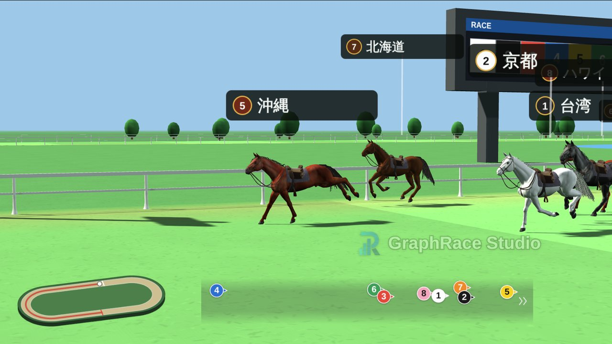
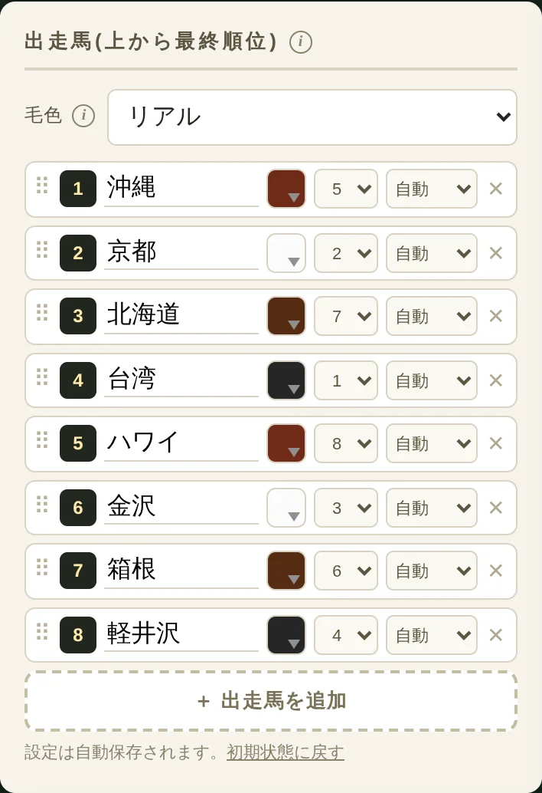
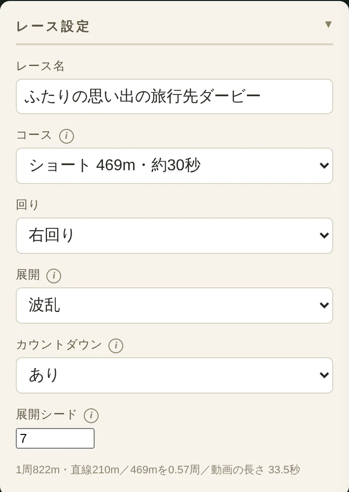
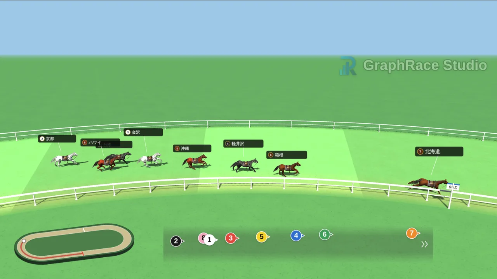
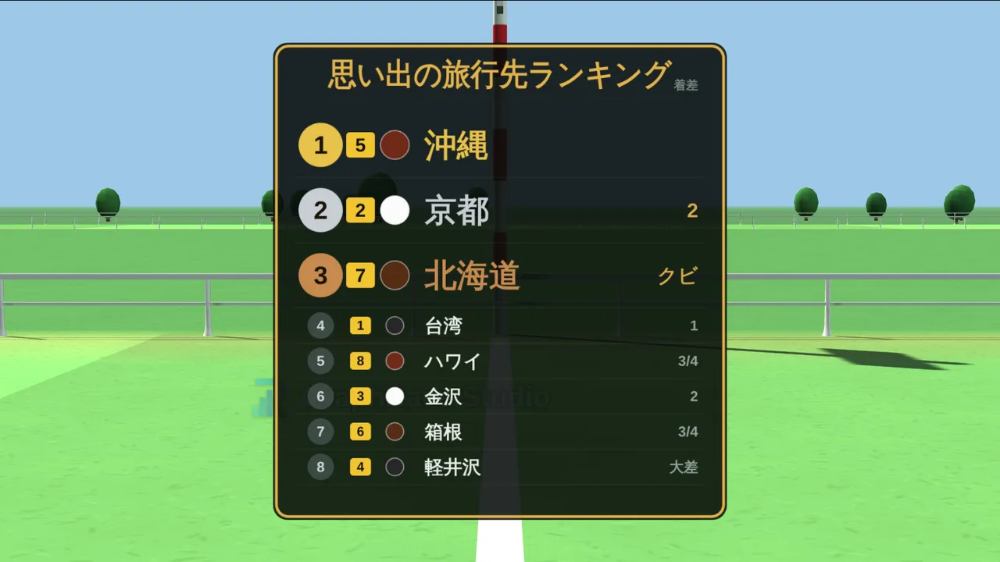
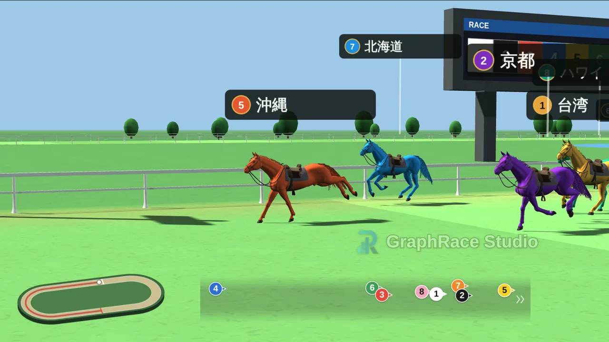

結婚式の余興クイズの作り方｜盛り上がる出題例と演出アイデア【幹事・新郎新婦向け】

結婚式の余興を頼まれて、クイズにしようと決めたものの、何問出せばいいのか、内輪ネタばかりにならないか、当日きちんと盛り上がるのか。そんな不安を抱えていませんか。
この記事では、結婚式・二次会の余興クイズを形式の選び方 → 問題の作り方 → 演出 → 当日の進行の順にまとめました。そのまま使える出題例と司会進行の台本例に加えて、スライドや効果音、回答札など、クイズをぐっと盛り上げる定番の演出を比較表つきで紹介します。新郎新婦が自分たちでゲスト参加型の演出としてクイズを用意する場合にも使える内容です。
演出アイデアの1つとして紹介している「格付けダービー」は、当サイト（GraphRace Studio）が開発・運営している無料ツールです。それ以外の演出は、特定のツールに頼らずに実践できる一般的な方法です。
結婚式の余興にクイズが選ばれる理由
歌やダンス、ムービーと並ぶ定番の余興の中で、クイズが選ばれやすいのには次のような理由があります。
- ゲスト全員が参加できる：見ているだけの出し物と違い、答えを考えるうちに自然と会場に一体感が生まれます
- 年齢を問わず楽しめる：ルールが「答えを選ぶだけ」なので、子どもから年配の親族まで説明なしで参加できます
- 新郎新婦の人柄が伝わる：答え合わせのたびにエピソードを紹介できるので、新郎側・新婦側のゲストがお互いの主役を知るきっかけになります
- 練習がほとんどいらない：ダンスや楽器のように何度も集まって練習する必要がなく、準備の中心は問題づくりです
クイズ形式の選び方
クイズの形式によって、盛り上がり方と準備の手間が変わります。会場とゲストの顔ぶれに合わせて、1〜2種類を組み合わせるのがおすすめです。
| 形式 | 内容 | 向いている場面 | 準備物 | 盛り上がり方 |
|---|---|---|---|---|
| 〇×クイズ | 問題に〇か×で答える | 披露宴・二次会どちらも | 〇×の札（なければ挙手） | 会場が〇派と×派に分かれ、正解発表で歓声が上がる |
| 3〜4択クイズ | 選択肢から1つを選ぶ | 披露宴・二次会どちらも | 選択肢を映すスライド、色つきの回答札 | ひっかけの選択肢で笑いを作りやすい |
| 以心伝心クイズ | 新郎新婦が同じ質問に別々に答え、一致するかをゲストが予想する | 二次会向き | フリップ2枚とペン | ふたりの答えが並んだ瞬間に会場が沸く |
| ドレス当てクイズ | お色直しのドレスの色を予想する | 披露宴向き | 投票用紙と投票箱 | 再入場の瞬間がそのまま正解発表になる |
| テーブル対抗クイズ | テーブルごとに相談して1つの答えを出す | ゲストが多い会、二次会 | テーブル分の回答用紙、得点表 | 初対面のゲスト同士でも相談を通じて打ち解けられる |
| 早押しクイズ | 代表者が早押しで答える | 二次会向き | 早押しボタン、マイク | テレビ番組のような緊張感が出る |
横にスクロールできます
披露宴と二次会で変えるべきポイント
- 年齢層：披露宴は親族や上司も同席するので、誰にでも分かる問題と、座ったまま参加できる〇×・4択が中心になります。二次会は友人中心なので、早押しや以心伝心のように少し踏み込んだ形式も選べます
- 時間：披露宴は進行表の枠が決まっていることが多く、延長はできません。二次会はやや融通がききますが、歓談の時間を削りすぎないようにします
- 内輪度：一部の友人しか知らない話題は、披露宴では避けます。二次会でも、会場の半分以上が分かる内容にとどめるのが無難です
盛り上がる問題の作り方と出題例
問題づくりの3つのコツ
- 誰にでも正解の可能性がある問題にする知っている人しか答えられない記述式より、選択肢から選ぶ形にすると、ふたりをよく知らないゲストも勘で当てられます。
- 選択肢にひねりを入れる正解のほかに、ありそうな答えと、思わず笑ってしまう答えを1つずつ混ぜると、正解発表のリアクションが大きくなります。
- 易しい問題から始めて、最後は全員が当たる問題で締める序盤で会場を温め、中盤で難しい問題を出し、最後は「新郎は今日の新婦を何点だと思っている？」のような答えが分かりきった問題にすると、気持ちよく終われます。
出題例（易しい順）
そのまま使える問題を、流れに沿って並べました。選択肢や答えは、新郎新婦に聞き取った内容に差し替えてください。
ウォーミングアップ（全員が答えやすい）
- ふたりが初めてデートした場所は？（水族館／映画館／動物園／居酒屋）
- ふたりが出会ったのは何年前？（1年前／3年前／5年前／10年前）
- ふたりの共通の趣味は？（キャンプ／サウナ／カフェめぐり／競馬観戦）
- 新婦の好きな食べ物は焼肉である。〇か×か
- 新郎は料理が得意である。〇か×か
中盤（エピソードで盛り上がる）
- 先に「好き」と伝えたのはどっち？（新郎／新婦）
- プロポーズの場所は？（自宅／レストラン／旅行先／車の中）
- ふたりが初めてケンカした原因は？（遅刻／食べ物の好み／テレビのチャンネル／旅行の行き先）
- 新郎が「この人と結婚したい」と思った瞬間は？（選択肢は4つ、エピソードを添えて）
- 新婦のスマホの待ち受け画面は？（新郎の写真／ペット／風景／初期設定のまま）
- ふたりの家事分担で、新郎の担当は？（料理／洗濯／掃除／ゴミ出し）
- 新郎の学生時代の部活は？（サッカー／吹奏楽／バスケットボール／帰宅部）
終盤（難問と、締めのサービス問題）
- ふたりが今まで一緒に行った旅行は何回？（数字がいちばん近いテーブルが正解）
- 新婦が新郎に言われていちばんうれしかった言葉は？
- ふたりが結婚式でいちばんこだわったところは？（ドレス／料理／会場の装花／招待状）
- ふたりで行った旅行先、「もう一度行きたい」ランキングの1位は？
- 新郎は、今日の新婦を何点だと思っている？（50点／80点／100点／120点）
16問目のようなランキング形式の問題は、答えを口頭で読み上げるより、画面に順位を映して発表すると盛り上がります。発表方法は演出アイデアで紹介します。
避けたほうがいい問題
- 過去の恋愛に関する話題：元恋人の人数や、別れた理由などは、親族の前では特に避けます
- 子どもの人数や妊娠などの話題：「子どもは何人ほしい？」は定番に見えますが、ふたりやゲストにとってデリケートな場合があります
- 一部の友人しか知らない内輪ネタ：答えを知っているテーブルだけが盛り上がり、ほかのゲストが置いていかれます
- 忌み言葉を使った問題文：「別れる」「切れる」「終わる」などは、選択肢の中でも使わないようにします
- 新郎新婦がサプライズにしたいこと：お色直しの衣装や再入場曲などを勝手に問題にせず、必ず事前に確認します
問題数と時間配分の目安
結婚式の余興の枠は、披露宴・二次会ともに15〜20分程度が一般的です。1問あたり2分前後を見込むと、7〜8問がちょうどよい問題数になります。これより多いと中だるみし、少ないと物足りなく感じられます。
1問ごとの流れは、次の4ステップを基本にするとテンポよく進められます。
- 出題（約20秒）問題と選択肢を読み上げ、スライドがあれば同時に映します。
- シンキングタイム（約30秒）BGMを流しながら、回答札を上げてもらうか、回答用紙に記入してもらいます。
- 正解発表（約20秒）ドラムロールなどの効果音でためてから、正解を発表します。
- 新郎新婦のひと言（約30〜50秒）その答えにまつわるエピソードを、本人たちに話してもらいます。ここがいちばん盛り上がる部分です。
さきほどの出題例から7〜8問を選ぶときは、ウォーミングアップから2問、中盤から3〜4問、終盤から2問を目安にすると、易しい問題から締めの問題までの流れが崩れません。
クイズを盛り上げる演出アイデア8選
同じ問題でも、見せ方ひとつで会場の反応は大きく変わります。ここでは、結婚式のクイズでよく使われている定番の演出を8つ紹介します。すべてを取り入れる必要はありません。まずは比較表で、会場の設備と準備にかけられる時間に合うものを選んでください。
| 演出 | 向いている人数 | 人数が多いときは | 準備時間の目安 | 当日のインターネット接続 | 向いているクイズ形式 |
|---|---|---|---|---|---|
| スライドで問題と選択肢を映す | 人数制限なし | 後ろの席からも読めるよう、文字を大きく・1枚の情報を少なくする | 2〜3時間 | 不要 |
|
| 効果音とBGM | 人数制限なし | 会場の音響スタッフと、音を出すタイミングを事前に共有する | 約30分 | 音源をダウンロードしておけば不要 |
|
| 回答札・フリップ | 〜50人程度 | テーブルごとに1組だけ配り、テーブル対抗にする | 1〜2時間 | 不要 |
|
| スマホで回答・自動集計 | 大人数向き | そのまま対応できる。スマホに不慣れな人はテーブル単位で参加してもらう | 1〜2時間 | 必要 |
|
| 受付での事前投票 | 人数制限なし | 投票箱を受付に複数置き、列が滞らないようにする | 約1時間 | 不要 |
|
| 早押しボタンの勝ち抜き戦 | 回答者は数人 （観戦は何人でも） |
各テーブルの代表者だけが回答し、ほかのゲストは応援に回る | 機材の手配＋約1時間 | 不要 |
|
| 正解発表で思い出の写真・動画を流す | 人数制限なし | スクリーンが遠い席のために、サブモニターがあるか会場に確認する | 2〜4時間 | 不要 |
|
| 競馬中継風の着順予想 （格付けダービー3D） |
出走は2〜16頭 （予想は何人でも） |
予想は回答札や挙手で全員が参加。正解者が多ければ、じゃんけんで景品を決める | 10〜15分 （＋録画約35秒） |
事前に録画（WebM）すれば不要 |
|
横にスクロールできます
準備時間は、7〜8問のクイズを想定した目安です。スライドや写真の点数、音源選びにかける時間によって前後します。スクリーンやマイク、音響の使用には会場ごとのルールがあるため、どの演出を選ぶ場合も、早めにプランナーや会場の担当者へ確認してください。
1. スライドで問題と選択肢を映す
PowerPointやGoogleスライドで、問題と選択肢を1問ずつ映す、いちばん基本の演出です。会場がざわついていても問題が伝わり、写真を使った問題も出せます。正解の選択肢だけ色を変えたり、アニメーションで浮かび上がらせたりすると、正解発表にメリハリがつきます。
- 1枚のスライドに入れるのは、問題文と選択肢だけにする
- 「A・B・C・D」と色を対応させておくと、回答札とそろえられる
- 最後に「全問正解者は？」「景品の紹介」のスライドを入れておくと、進行が途切れない
2. 効果音とBGMでテレビ番組風にする
出題の効果音、シンキングタイムのBGM、正解発表前のドラムロール、正解・不正解の効果音。これだけで、クイズの雰囲気はテレビのクイズ番組に近づきます。準備の手間は小さいわりに効果が大きいので、どの形式でも取り入れたい演出です。
当日は司会者が音を操作する余裕がないことが多いため、音響の担当者を1人決めておくと安心です。会場の音響スタッフにお願いする場合は、流す音と順番をまとめた一覧表を事前に渡します。
3. 回答札やフリップで全員参加にする
〇×の札や、A〜Dの4色の札を各席に置いておき、一斉に上げてもらう方法です。札を上げた瞬間に会場の答えの分布が一目で分かるので、「半分以上がAです！」のような実況も入れやすくなります。
スマホの操作が必要ないため、年配の親族も迷わず参加できるのが大きな利点です。席札やメニュー表と一緒にテーブルへセットしておけば、配る手間もかかりません。
4. スマホ回答で集計を自動にする
クイズ用のWebサービスや、Googleフォームのテスト機能を使い、ゲストに自分のスマホで回答してもらう方法です。正解数の集計や全問正解者の抽出を自動でできるので、ゲストが多い二次会では幹事の負担が大きく減ります。
一方で、会場の電波やWi-Fiが弱いと回答が送れない、スマホに不慣れなゲストが置いていかれる、といった弱点もあります。事前に会場で通信状況を確かめ、テーブル単位で1台のスマホを使う形にするなど、全員が参加できる工夫を用意しておきましょう。
5. 受付で事前投票（ドレス当て・入場曲当て）
受付でゲストに投票用紙を渡し、お色直しのドレスの色や再入場の曲を予想してもらう方法です。挙式から披露宴までの待ち時間を有効に使え、余興の時間は答え合わせだけで済みます。
ドレス当てクイズは、再入場でドアが開いた瞬間がそのまま正解発表になるのが魅力です。ドレスの色は新婦がサプライズにしたい場合も多いので、クイズにしてよいかどうかは必ず本人に確認してください。
6. 早押しボタンで勝ち抜き戦
各テーブルから代表者を1人ずつ選び、早押しボタンで答えてもらう形式です。テレビ番組のような緊張感が生まれ、代表者を応援するテーブルごとの一体感も出ます。早押し機はイベント用品のレンタルや、パーティーグッズとして手に入ります。
早押しは答えを知っている人ほど有利なので、問題は新郎新婦に関するものと一般常識を半分ずつにすると、友人以外のゲストも勝ち上がれるチャンスが生まれます。
7. 正解発表で思い出の写真や動画を流す
「初デートの場所は？」の正解発表で、実際にそのとき撮った写真を映す。正解を示すだけでなく、ふたりの歴史を伝える場面にもなるので、クイズがそのまま紹介ムービーの役割を果たします。
写真は新郎新婦から事前に受け取っておき、スライドの正解ページに入れておくだけで準備できます。子どものころの写真や、友人しか持っていない写真を混ぜると、会場から歓声が上がります。
8. 競馬好きのふたりには「着順予想クイズ」：格付けダービー（3D）
新郎新婦が競馬好きだったり、ゲストに競馬ファンが多かったりする結婚式なら、ランキング形式の問題の答えを競馬中継風のレースで発表する演出がおすすめです。
格付けダービーの3D「リアル競馬風」では、答えの選択肢を馬の名前にして、正解の順位どおりにゴールするレースを作れます。ゲストは1着を予想してからレースを見守るので、「正解はこちらです」と読み上げるよりも、会場がずっと熱くなります。ゲート入りからコーナー、最終直線、ゴール後の着順掲示板まで、カメラが本物の競馬中継のように切り替わります。
作り方は次の4ステップです。
- ランキング形式の問題を決める「ふたりで行った旅行先、もう一度行きたい順は？」「新婦が選ぶ、新郎の好きなところランキング」など、選択肢が4〜8個程度で、新郎新婦に順位をつけてもらえるお題が向いています。
- 選択肢を馬の名前にして、正解の順に並べる出走馬リストは上から最終着順です。名前（10文字まで）を入力し、ドラッグで正解の順位に並べ替えます。右側の数字は出走枠（ゲートの位置）なので、着順と関係なくばらばらにしておくと、スタートの時点で答えが読まれません。
- 「リアル競馬風」に切り替えてレースを設定する余興に使うなら、コースは「ショート 469m・約30秒」、展開は直線で見せ場が作られる「波乱」がおすすめです。レース名は「ふたりの思い出の旅行先ダービー」のように、G1レース風の名前をつけると雰囲気が出ます。
- 録画して当日に持っていく「録画してWebM保存」を押すと、カウントダウンから着順掲示板までが動画として保存されます。当日はその動画を再生するだけなので、会場のインターネット接続は必要ありません。




競馬好きのふたりやゲストに刺さるアレンジ
- 思い出の競馬場に合わせてコースを選ぶ：「広い 2400m」は日本ダービーと同じ距離です（約2分27秒あるので、最終問題の特別演出に向いています）。回りも右回り・左回りを切り替えられます
- 毛色を選ぶ：「リアル」なら鹿毛・芦毛・青鹿毛・青毛の4種から選べます。遠くの席から見分けやすくしたいときは「カラー」にすると、馬ごとに違う色で走ります
- 各馬の脚質を指定する：大逃げ・逃げ・先行・差し・追込を馬ごとに選べます。「新郎の推しは追込で最後に来る」のように、ストーリーを仕込むこともできます
- 司会者が実況する：「さあ最後の直線、沖縄が抜け出した！」と、司会者が競馬実況風にしゃべると、会場の盛り上がりが一段上がります

着順予想は、ゲスト同士で現金や物品を賭けるのではなく、正解者に幹事や新郎新婦が用意した景品を渡す形にしてください。正解者が多い場合は、じゃんけんで景品の当選者を決めると公平です。
出走馬の画像や色の設定、2Dモードとの違いなど、詳しい操作方法は競馬風の順位発表動画「格付けダービー」の作り方で解説しています。
会場で失敗しないための確認事項
- 持ち込みの可否を確認する：パソコンや早押し機、スライド・動画データの持ち込みにルールを設けている会場もあります。プランナーや会場の担当者に早めに相談します
- 映像と音声の出力を確認する：プロジェクターの接続端子（HDMIなど）と、パソコンの音を会場のスピーカーから出せるかを、リハーサルや打ち合わせで確かめます
- 動画は事前に書き出し、オフラインで再生できるようにする：会場のWi-Fiに頼らず、パソコン本体にデータを保存しておきます。WebM形式の動画はChromeなどのブラウザで再生できるので、当日使うパソコンで一度再生しておきます
- パソコンの通知を切る：投影中にチャットやメールの通知が映らないよう、集中モードなどで通知を止めておきます
当日の進行台本例（二次会20分枠）
テーブル対抗の4択クイズを7問行い、最後にランキング問題を着順予想で発表する流れの例です。披露宴の場合は、問題数を5〜6問に減らして15分に収めてください。
| 時間 | 内容 | 司会のセリフ例・ポイント |
|---|---|---|
| 0:00〜0:02 | ルール説明 | 「これから、おふたりにまつわるクイズを7問出題します。テーブルごとに相談して、A〜Dの札を上げてください。いちばん正解の多かったテーブルには豪華景品があります！」 |
| 0:02〜0:04 | 第1問 | ウォーミングアップの易しい問題。正解発表後に「全テーブル正解！さすがです」と会場を温める |
| 0:04〜0:14 | 第2問〜第6問 | 1問ごとに新郎新婦にひと言もらう。司会は「新郎、この答えで合っていますか？」と振ると話を引き出しやすい |
| 0:14〜0:17 | 第7問（最終問題） | ランキング形式の問題。「1位を当てたテーブルには得点2倍！」と盛り上げ、各テーブルの予想を聞いてからレース動画を再生する |
| 0:17〜0:18 | 結果発表 | ホワイトボードなどに記録しておいた得点を読み上げる。同点ならじゃんけんや、数字に最も近い答えを出したテーブルが勝ち抜けるサドンデス問題で決着 |
| 0:18〜0:20 | 景品の授与 | 新郎新婦から優勝テーブルへ景品を手渡し、記念撮影。最後に拍手で締める |
横にスクロールできます
得点係を1人決め、1問ごとにテーブルの正解数を記録しておくと、結果発表で慌てずに済みます。
準備スケジュールと新郎新婦への確認
| 時期 | やること |
|---|---|
| 1か月前 | 新郎新婦にネタを聞き取る。本人だけでなく、家族や共通の友人からエピソードを集めると問題の幅が広がる。余興の持ち時間と、会場の設備（スクリーン・マイク・音響）も確認する |
| 2週間前 | 問題と選択肢を確定し、新郎新婦に内容をチェックしてもらう。景品を手配する |
| 1週間前 | スライド・効果音・回答札を仕上げる。レース動画など映像を使う場合は、この時点で書き出しておく |
| 前日〜当日 | 会場のパソコンやプロジェクターでの再生を確認し、司会・音響・得点係の役割分担を最終確認する |
横にスクロールできます
サプライズにしたいことと、確認すべきことの線引き
クイズの中身を新郎新婦にすべて見せると、本番の驚きが薄れてしまいます。一方で、確認をしないまま出題すると、ふたりが触れてほしくない話題に踏み込んでしまうおそれがあります。
- 必ず確認すること：問題に使うエピソードや写真の公開範囲、答えの事実関係、ドレスや入場曲など当日まで秘密にしておきたいもの
- サプライズにしてもよいこと：選択肢のひねり方、演出の方法、友人や家族から集めたちょっとした証言の使い方
迷ったら「このエピソードを問題にしてもいい？」とだけ聞き、問題文や選択肢は伏せておくのが、サプライズと安心を両立させるコツです。
景品の選び方
クイズに景品があると、ゲストの真剣さがぐっと増します。選ぶときは次の3点を意識してください。
- 優勝景品と参加賞を分ける：目玉になる景品を1つ用意し、ほかのゲストにも小さな参加賞が行き渡るようにすると、当たらなかった人の不満が出にくくなります
- 持ち帰りやすいものを選ぶ：引き出物もあるので、大きすぎるものや重いものは避け、カタログギフトや目録にすると親切です
- クイズが始まる前に景品を見せる：ルール説明のときにスライドやパネルで景品を紹介しておくと、参加意欲が高まります
予算は会費や新郎新婦の意向によって変わるため、決まった相場はありません。幹事が立て替える場合は、誰が費用を負担するかを事前に新郎新婦と決めておきましょう。
よくある質問（FAQ）
結婚式の余興クイズは何問くらいが適切ですか？
余興の持ち時間は15〜20分が一般的で、1問あたり2分前後かかるため、7〜8問が目安です。披露宴で時間が短い場合は5〜6問に減らし、新郎新婦がエピソードを話す時間をしっかり残してください。
新郎新婦にはクイズのネタをどこまで聞けばいいですか？
問題に使うエピソードと、その答えが正しいかどうかは本人に確認します。一方で、問題文や選択肢の作り方まで見せる必要はありません。「このエピソードを問題にしてもいい？」と許可だけもらい、細かい内容は当日のお楽しみにしておくと、本番の反応も新鮮になります。
スクリーンがない会場でもクイズはできますか？
できます。問題と選択肢を大きな紙やスケッチブックに書いて掲げる、選択肢を印刷した回答用紙をテーブルに配る、といった方法なら、スクリーンがなくても全員が参加できます。〇×クイズや以心伝心クイズは、道具が少なくても成立しやすい形式です。
同点のテーブルが出たときはどうすればいいですか？
じゃんけんで決めるのがいちばん手早い方法です。時間に余裕があれば、「ふたりが出会ってから今日で何日目？」のような数字で答える問題を1問だけ出し、正解に最も近いテーブルを勝ちにするサドンデス方式にすると、最後まで盛り上がります。
会場に来られないオンライン参加者がいる場合は？
スライドを画面共有しながら出題し、回答はチャットやGoogleフォームで受け付けると、会場のゲストと同時に参加してもらえます。レース動画などの映像も、画面共有で一緒に見られます。音声が途切れやすいため、問題文は必ず画面にも表示してください。
クイズのBGMや効果音に市販の曲を使ってもいいですか？
会場で市販の曲をそのまま流す場合、会場が音楽の著作権管理団体と包括契約を結んでいれば、個別の手続きは不要なことが多くあります。一方、市販の曲を入れた動画を自分で作る場合は「複製」にあたり、別途手続きが必要です。使い方によって扱いが変わるので、まずはプランナーや会場に確認し、迷ったら著作権フリーの効果音・BGMを使うのが安全です。
まとめ
結婚式の余興クイズは、問題の数を増やすよりも、誰もが参加できる形式を選び、1問ごとに新郎新婦のエピソードを引き出すことで満足度が高くなります。
- 形式は〇×・4択を軸に、会場とゲストの顔ぶれに合わせて1〜2種類を組み合わせる
- 問題は易しい → 難しい → 全員が当たる締めの問題の順に並べ、内輪ネタやデリケートな話題は避ける
- 持ち時間15〜20分なら7〜8問が目安。1問ごとに新郎新婦のひと言を入れる
- 演出は効果音・回答札・スライドから取り入れ、競馬好きのふたりなら最終問題を着順予想レースにする
- エピソードの使い方と会場の設備は、早めに新郎新婦・プランナーへ確認する
会員登録やアプリのインストールは不要。答えを馬の名前にして順位を決めるだけで、3DCGの馬が走る競馬中継風のレース動画が作れます。
年末に幹事を任されている方は、忘年会で盛り上がるゲーム・余興15選もあわせて参考にしてください。クイズ以外のゲームや、景品抽選の演出も紹介しています。